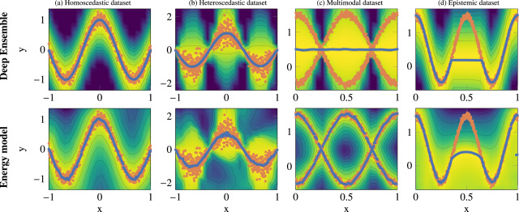
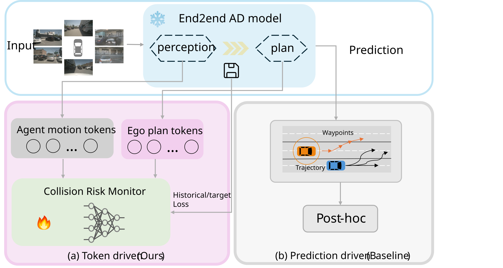

About me
I am a PhD student at the Computer Vision Laboratory (CVL), Department of Electrical Engineering (ISY), Linköping University. I am passionate about artificial intelligence in general and uncertainty quantification in particular: enabling neural networks to be aware of the uncertainty in their own predictions, a vital step towards safe and trustworthy AI.
My doctoral research applies uncertainty quantification to computer vision tasks to improve the safety and trustworthiness of autonomous systems, including regression, human pose estimation, and autonomous driving. My PhD project is part of Situation Aware Perception for Safe Autonomous Robotics Systems (ELLIIT Project C08), and I am affiliated with the Wallenberg AI, Autonomous Systems and Software Program (WASP).
Before my PhD, I completed an M.Sc. in Machine Learning at Lund University (2020–2022), where my thesis focused on radar detection using deep learning. I received my B.Sc. in Automation from Beihang University (2015–2019). Prior industry experience includes machine learning development at Axis Communications.
Outside of research, I enjoy photography and aerial landscape videography, playing badminton, and swimming (freestyle and breaststroke). I am also a fan of science fiction literature and films, such as The Martian and The Three-Body Problem.
News
- Awarded WASP Research Stint Abroad funding (~180,000 SEK) for a research visit at TU Delft, Netherlands.
- New Vinnova FFI project (2026): Risk Assessment in Vision-Language-Action Models for Automated Vehicles — developing risk assessment methods for vision-language-action models in automated driving. [Link]
- Passed my half-time seminar (opponent: Fredrik Lindsten), November 28, 2025.
- Attended the International Computer Vision Summer School (Spatial Intelligence), July 2025.
- Received Long Oral Certificate at the CVPR workshop Safe Artificial Intelligence for All Domains (2024) for Hinge-Wasserstein: Estimating Multimodal Aleatoric Uncertainty in Regression Tasks.
- Serving as reviewer for IJCV, Pattern Recognition Letters (3 times), CVPR 2025, CVPR workshop SAIAD (2024–2026), and AAAI 2025.
Research
My research focus can be categorized into:
(1) Algorithmic interests: Uncertainty quantification, probabilistic deep learning, and calibration metrics for regression and structured prediction.
(2) Application interests: (i) End-to-end autonomous driving and collision risk estimation. (ii) Human pose estimation with multimodal aleatoric uncertainty.

Developing robust uncertainty evaluation metrics for deep regression (arXiv).

Overview of collision risk estimation via loss prediction in end-to-end autonomous driving (arXiv).
A full list of my publications and preprints is here.
Contact
Email: ziliang.xiong@liu.se
Office: Campus Valla, B-huset, Entrance 25, Room 2B:524, Linköping, Sweden